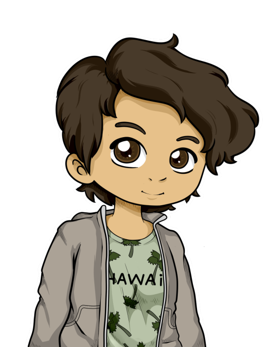

 Allez ! On y va !
Samy et Ivan avaient mangé sans Léopold. Ils l’avaient attendu, mais il n’était pas venu. Au moment de rentrer en classe, il n’était toujours pas là.
Mais qu’est-ce qu’il fout ? Il va encore se faire virer !
 Il va pas rater grand-chose…
Il va pas rater grand-chose…
Ouais, mais je l’ai pas vu depuis un moment, et son portable ne répond pas.
Tu veux qu’on aille le chercher ? Mais faut se grouiller parce que sin…
 Eh ! Vous deux ! Faut qu’on parle !
Eh ! Vous deux ! Faut qu’on parle !
Et merde…
Eh Camille ! T’as pas vu Léopold ?
Euh non… Mais c’est pas le sujet. Vous avez avancé ?
Bah à ton avis ?
Ivan commença à imiter un flamant rose, ce qui énerva considérablement Camille.
Va falloir vous dépêcher ! Il nous reste moins d’un mois pour…
Camille ! Tu rentres !
Si tu veux qu’on cherche Léopold, on doit y aller maintenant.
Ok, on va commencer par fouiller le lycée.
Après une heure de recherches infructueuses, ils finirent par la salle de musique.
Est-ce que quelqu’un a vu Léopold ?
 Non.
Non.
 Il était à l’infirmerie je crois…, mais je sais plus en fait.
Il était à l’infirmerie je crois…, mais je sais plus en fait.
Étrangement, c’était leur meilleure piste. Ils se dirigèrent alors vers l’infirmerie.
 Qu’est-ce que vous faites là ?
Qu’est-ce que vous faites là ?
Toi qu’est-ce que tu fais là ? T’as pas cours ?
Si, mais vous aussi je vous signale, et puis j’ai vomi regardez.
Elle sortit un petit Tupperware rose, et l’ouvrit devant Ivan.
Ah oui ! On reconnaît les courgettes de la cantine là.
Ouais, et là c’est le steak…
Oui, oui, c’est très joli. Dis-moi, t’aurais pas vu Léopold ?
Pourquoi, vous le cherchez ?
Parce qu’il a disparu sans laisser de traces.
Ivan… Tu tiens vraiment à lui hein ?
Bah évidement.
Alors ne le cherchez pas. Si il ne vous dit rien, c’est qu’il n’y a rien à savoir.
Tu fais peur Ambra…
Écoutez, il est rentré chez lui, il reviendra lundi, maintenant retournez en cours.
Tu as l’air de savoir des choses…
Et je suis pas la seule. Maintenant, encore une fois, si on ne vous a rien dit, il y a une raison. Alors retournez en cours.
Elle paraissait légèrement énervée, ce qui lui donnait en fait un air adorablement mignon. Voyant qu’ils ne pourraient rien en tirer, ils sortirent du lycée.
Allez monte !
On va où ?
Chez Léopold ! Tu suis un peu l’histoire ?
Après un trajet rythmé par les dos-d’âne pris à 145 km/h, ils arrivèrent devant une petite maison.
TOC TOC TOC
 Oui ?
Oui ?
Une jeune fille rousse leur ouvrit la porte
On cherche Léopold, tu l’aurais pas vu par hasard ?
 Euh… il est pas en cours ? Et puis, vous êtes qui ?
Euh… il est pas en cours ? Et puis, vous êtes qui ?
Bah ses amis !
Désolé, mais il ne m’a jamais parlé de vous. Mais pourquoi vous le cherchez ?
Parce qu’il a disparu au milieu de la journée…
Bah désolée, je peux pas vous aider.
VLAM
C’est moi ou tout le monde se fout de notre gueule aujourd’hui ?
J’avoue, c’est suspect…
Ivan sentait un sentiment indéfinissable l’envahir. Son meilleur ami disparaissait sans le prévenir, alors que tout le monde semblait savoir où il se trouvait. Il se sentait… Trahit. Il regarda Samy avec un air abattu.
Qu’est-ce qu’on fait du coup ?
Si même sa sœur ne veut rien nous dire, il va falloir le trouver autre part que IRL. Et je sais qui va nous aider…